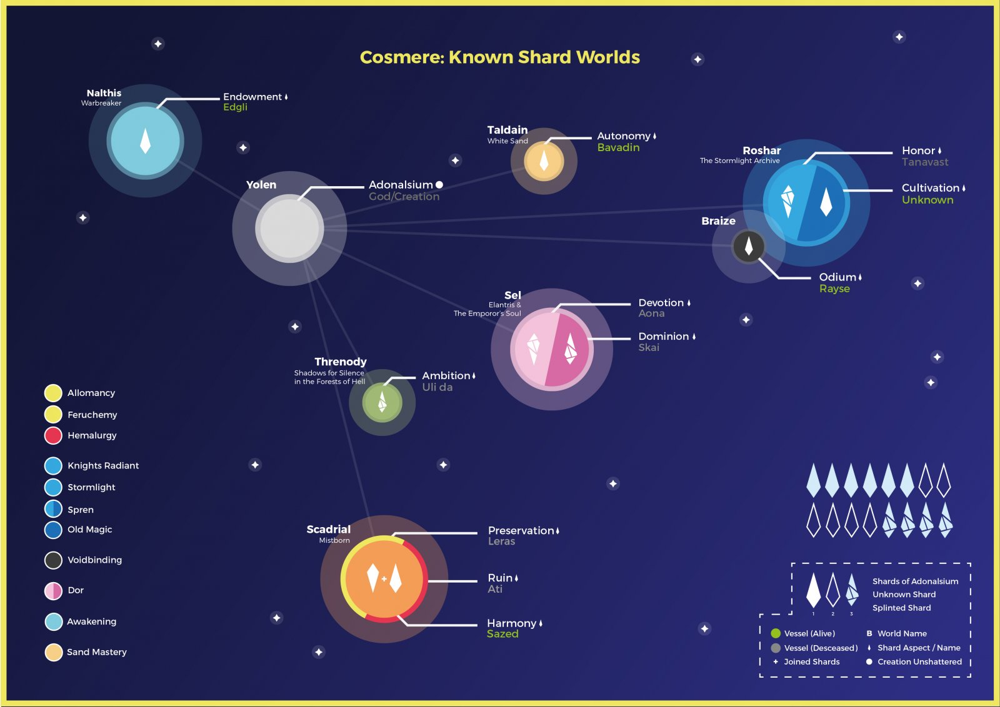

Welcome to the Cosmere!
If you’re curious about the Cosmere but not quite sure where to begin, you’re in the right place! This site is designed to be a friendly guide for newcomers, helping you explore this amazing universe without spoiling the fun.
What is the Cosmere?
The Cosmere is a shared universe where all of Brandon Sanderson’s epic fantasy books take place. Each series is set on a different world, with its own magic system and unique story, but they’re all secretly connected in one larger narrative.
Why Read the Cosmere?
- Unique magic systems that follow logical rules.
- Characters that are complex and memorable.
- Massive world-building with layers of hidden mysteries.
- Books that connect in clever, unexpected ways.
Where Should You Start?
Don’t worry if you’re not sure where to begin. Here are some great options:
- Mistborn: The Final Empire – A story of rebellion with a unique metal-based magic system.
- Elantris – A standalone novel about a fallen magical city.
- The Way of Kings – If you’re up for an epic fantasy journey with deep world-building.
The Cosmere Connection (No Spoilers!)
One of the coolest parts of the Cosmere is that the books are secretly connected. You don’t need to understand how at first, but as you read more, you’ll start noticing small hints and connections that make the experience even richer.
Want to Learn More?
If you’re ready to learn more, check out Brandon Sanderson’s official site for news, book releases, and more!
